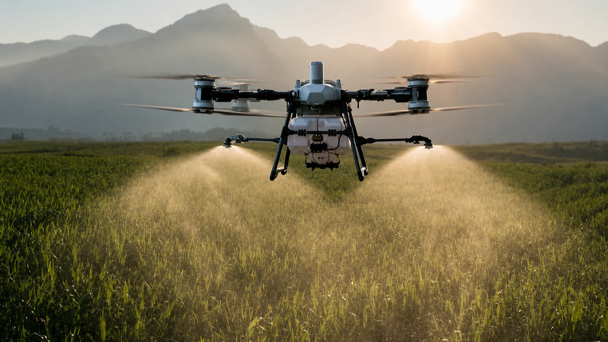

Monitoring
Vorgesehene Beobachtungs- und Dokumentationsansätze für landwirtschaftliche Flächen.
Agrardrohnen
Leistungsangebot in Vorbereitung
Bavaria AeroTech bereitet einen Agrardrohnen-Geschäftsbereich für landwirtschaftliche Betriebe vor. Vorgesehen sind ausgewählte Anwendungen in Monitoring, digitaler Datenerfassung und Präzisionslandwirtschaft.

Leistungsbereich in Vorbereitung
Der genaue Leistungsumfang wird technisch, regulatorisch und wirtschaftlich vorbereitet. Erst nach der schrittweisen Validierung sollen geeignete Anwendungen weiterentwickelt werden.
Aktuell sind keine Einsätze buchbar. Interessenbekundungen und der Austausch mit möglichen Pilotpartnern helfen, den Bereich praxisnah vorzubereiten.
Vorgesehene Anwendungen
Die folgenden Bereiche beschreiben geplante Schwerpunkte. Sie sind noch kein buchbares Leistungsangebot.
Vorgesehene Beobachtungs- und Dokumentationsansätze für landwirtschaftliche Flächen.
Geplante Erfassung und strukturierte Bereitstellung relevanter Flächeninformationen.
Geeignete Anwendungsprofile sollen erst mit Blick auf Technik, Regulierung und betriebliche Anforderungen bewertet werden.
Gemeinsame Vorbereitung und Validierung ausgewählter Einsatzprofile mit geeigneten Partnern.
Vorgesehene Plattform
Für ausgewählte Anwendungen wird eine Plattform der DJI-Agras-Klasse vorgesehen. Die technische Auswahl und Konfiguration befinden sich in Vorbereitung.
Eine DJI-Agras-Drohne ist nicht als bereits beschafft dargestellt. Beschaffung, konkrete Ausstattung und spätere Einsatzprofile bleiben abhängig von der weiteren technischen, regulatorischen und wirtschaftlichen Prüfung.
Technologiepartner
DroneUA ist der benannte Technologiepartner von Bavaria AeroTech im Bereich Agrardrohnen und Technologietransfer.
Der fachliche Austausch unterstützt die Vorbereitung eines geeigneten Leistungsangebots für den deutschen Markt. Daraus wird keine Exklusivität, Beschaffung oder operative Einsatzbereitschaft abgeleitet.
Schrittweise Vorbereitung
Die Reihenfolge dient der Vorbereitung; Zeitpunkte und Ergebnisse sind nicht festgelegt.
Geeignete Plattform und Konfiguration prüfen.
Erforderliche Rahmenbedingungen für mögliche Einsatzarten klären.
Praxisnahe Anwendungsfälle gemeinsam mit potenziellen Partnern eingrenzen.
Interessen und Voraussetzungen für mögliche Pilotvorhaben abstimmen.
Die vorgesehenen Abläufe in passenden Pilotkonstellationen bewerten.
Erst nach der Validierung kann ein geeigneter Leistungsumfang weiterentwickelt werden.
Pilotpartner
Bavaria AeroTech sucht den Austausch mit landwirtschaftlichen Betrieben, die ihre Anforderungen an Monitoring, Datenerfassung oder Präzisionslandwirtschaft in die Vorbereitung einbringen möchten.
Im Vordergrund stehen fachliche Einordnung, geeignete Einsatzprofile und eine transparente Pilotvorbereitung – nicht die kurzfristige Buchung eines Einsatzes.
Interesse als Pilotpartner vormerkenFAQ
Nein. Das Leistungsangebot befindet sich in Vorbereitung. Interesse kann vorgemerkt und ein möglicher Pilotbedarf besprochen werden.
Nein. Eine DJI-Agras-Plattform ist vorgesehen, aber Beschaffung und konkrete Konfiguration befinden sich noch in Vorbereitung.
Vorgesehen sind ausgewählte Anwendungen in Monitoring, digitaler Datenerfassung und Präzisionslandwirtschaft. Der konkrete Umfang wird erst weiter geprüft und validiert.
Nächster Schritt
Sie möchten eine Anforderung schildern oder als möglicher Pilotpartner in Kontakt bleiben?
Interesse vormerken